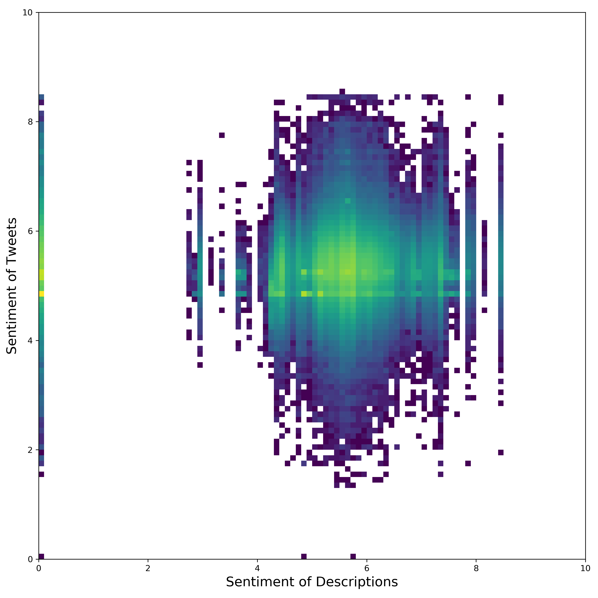
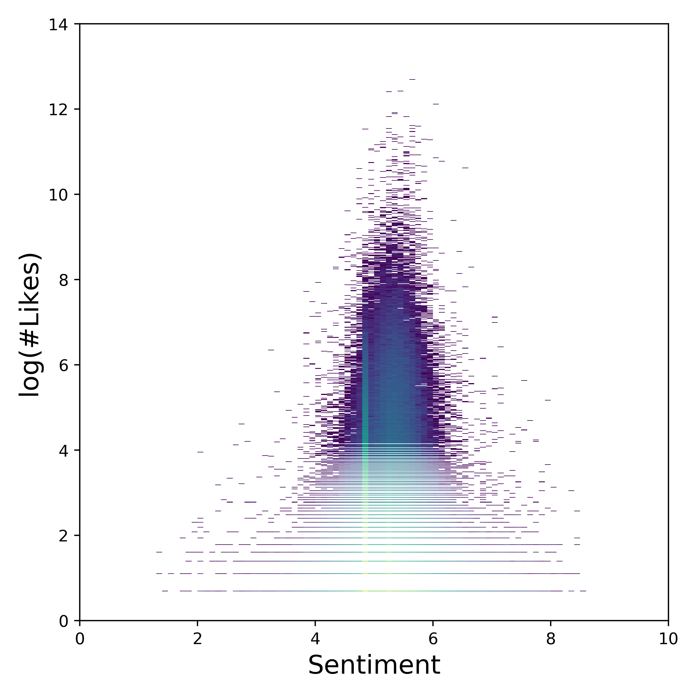
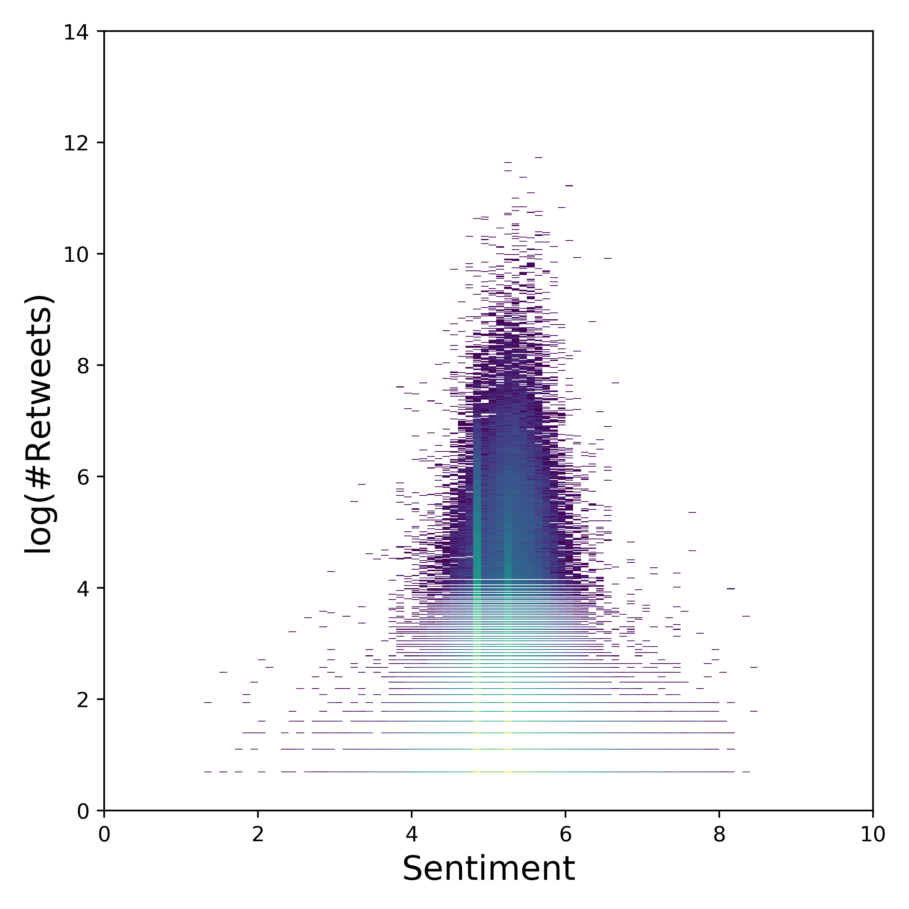

The LabMT wordlist was used to calculate the sentiment of each Tweet and profile description.
These results were than analyzed in different ways.
Difference between Tweets and Profile description
Figure 1: Tweet Sentiments
Figure 2: Profile Descriptions
The histogram of the sentiments of the tweets/descprtions can be found in Figure 1/2.
The average for the Tweets is $\approx 5.20 \pm 0.34$, and for the profile descprtions: $\approx 5.54 \pm 0.63$.
While the sentiment of the profile descriptions seems to be a little bit lower, the difference is inside the standard deviation, and therefore not significant.
In general, the distribution of the profile descriptions is much broader, than the one for the tweet sentiments.
However, this might be purely explained just by the fact, that the sample size for the descprtions is much lower.
In the Tweet histogram, there are outliers at certain sentiment values.
Those were removed, and to make those 2 distriutions directly compareable, both distributions were divided by ther maximum.
The result can be seen in the following figure:
Figure 3: histogram of the sentiment of Tweets and Descriptions.
Correlation
It was also evaluated whether there is any correlation between the sentiment of the tweets, and the sentiment of the according profile descriptions.
For this a heatmap of the descprtion sentiments to the tweet sentiments was created.
However, as can be seen, there does not seem to be any significant correlation.

Figure 4: Heatmap of description-sentiment to tweet-sentiments.
Likes/Followers according to Sentiment of Tweets/Descriptions

Figure 5: Sentiment - log(#Likes) heatmap.

Figure 6: Sentiment - log(#Retweets) heatmap.
Figure 5 and 6 present the disribution of the Sentiment, according to the number of likes/retweets of the according Tweet.
However, again, there are no significan features apparent, that would suggest the sentiment of a tweet, and the number of retweets/likes it recieves.
Average Sentiment per Day
In the following figure, the average sentiments for the troll tweets, and for whole twitter can be compared. (Not the whole of Twitter, but Twitter’s Gardenhose feed, which represents approximately 10% of all Tweets.)
Some differences in the 2 sentiment time series are immediately striking.
Firstly, till April 2012, the day-to-day difference in the sentiments of the troll tweets is very high (i.e.: It jumps around a lot.)
The reason being is, that the number of Tweets in the dataset for that timepriod is very low, therefore the day-to-day variance is also higher.
The average sentiment/day over the whole period is $\approx 5.24 \pm 0.19$.
Thats significantely lower than the average sentiment/days of the Gardenhose feed $\approx 6.02 \pm 0.04$.
The average troll tweets is therefore significantely more negative, than the average Tweet.
To make this plot more explorable and make it easier to compare changes in activity across both time series, they were standardized.
So if $S(t)$ is the time series, the standardized version of the time series is $\bar{S}(t) = \left( S(t) - \text{avg}(S)\right)/\text{std}(S)$.
This plot can be found in the following figure.
Whats also striking about the troll sentiments is, that there seem to be well defined time periods, when the sentiment is lower.
For example, 10.May 2013 to 31.Jan 2014, the sentiment is about $0.15$ points lower than the sentiment before/after that time period.
Another dropoff happens in the period from the 19.Oct 2015 to the 27.Dec 2015.
This might be explained by specific operations of the IRA in that time periods.
However, this is just speculation and could not verified any further.
Vacabulary Analysis
Disclaimer: For out vocabulary analysis, we focus on english tweets only.
Our dataset contains 9 years of troll tweets. In the first few years, less than 50 tweets were published by these accounts every month.
Since July 2014, the monthly amount of tweets increased rapidly to tens and even hundreds of thousends.
Therefore, our analysis focuses only on the tweets published between January 2014 and May 2018.
From the plot below it can be seen that the tweets are very often targetting the the U.S. elections. Starting in June 2015, Barrack Obama was mentioned in 11 thousand tweets.
That amount decreased over the following months and in December 2015 the accounts started to focus more on Donald Trump.
In September 2016, Hillary Clinton was mentioned in more than 5000 tweets (similar to Donald Trump).
What we can see afterwards is decreasing number of tweets mentioning Hillary Clinton and, on the other side, increasing number of tweets mentioning Donald Trump.
An interesting situation can be seen in August 2017, when there is a peak in the number of tweets about Donald Trump as well as tweets about America.
This situation can be linked to the twitter escalation from Donald Trump towards North Korea after the tweet that America's military capabilities against North Korea are "locked and loaded"
[The Washington Post].
However, further analysis is necessary to validate this hypothesis.
Wordclouds
To extend our vocabulary analysis, we present the most common words for each month in the form of a wordcloud.
What we observe from the tweets starting in July 2014 is that initially, the troll accounts focused on expressing feelings - either positive with words like love and like, or negative (foke).
In 2016, the trolls focused on some of the biggest events in the U.S. - the presinedtial elections (trump) as well as the major shootings in the U.S. in that year (people, killed, police, black).
After the US elections, the focus was moving hand in hand with the scandals occurring around the newly elected president Donald Trump.
FBI tax investigation, or Robert Mueller investigation about cooperation with the Russian government in efforts to interfere in the 2016 presidential elections.
Finally, an interesting observation can be seen in July and August 2015 where the tweets focused mostly on physical health (indicated by words like workout, exercise, weight, fitness, and similar).